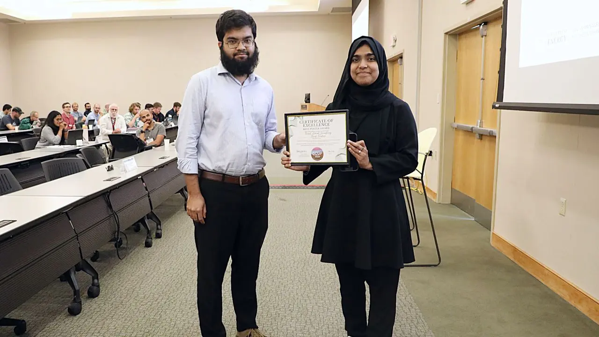

Quantum Error Correction
Surface-code and qLDPC decoding, mismatched inference, graph-based learning, decoder safety gates, and real-time correction strategies.
Quantum Computing Enthusiast
Decoding noise to protect quantum information: fast, reliable decoders for fault-tolerant quantum computing.
Open to research collaborations and Ph.D. opportunities
Select a qubit to begin.
Illustrative model: distance-5 rotated surface code, bit-flip errors only.
I am a first-year Doctor of Engineering student in Electrical and Computer Engineering at Lamar University, focused on practical decoder architectures for reliable and fault-tolerant quantum computing.
My work develops decoder-centered methods for quantum error correction, combining realistic surface-code simulation, mismatch-aware inference, graph-residual learning, and confidence-based safety gates. I aim to translate strong logical-error performance into scalable, real-time decoding systems that make dependable correction decisions within quantum-control latency and hardware constraints. I am also interested in extending these ideas toward qLDPC codes while connecting QEC algorithms with computer architecture, secure systems, memory, and quantum communication.
Building a dependable path from noisy syndrome data to fast, explainable, and hardware-aware correction.
Surface-code and qLDPC decoding, mismatched inference, graph-based learning, decoder safety gates, and real-time correction strategies.
Teleportation protocols, noisy-channel fidelity, adaptive correction, and practical evaluation on quantum hardware.
Hybrid quantum-classical models, quantum image preprocessing, and ML methods for prediction and error mitigation.
Hardware-conscious inference, quantum-control interfaces, computer architecture, secure systems, and memory-aware decoder deployment.
A disagreement-gated graph-residual framework that selectively corrects mismatched MWPM decisions across surface codes.
Evaluated at code distances 3, 5, and 7, with improved logical-error performance and positive net correction under mismatch.
An adaptive machine-learning correction framework for improving teleportation fidelity under realistic quantum noise.
Benchmarking quantum image dataset preprocessing across QCNN, QuanvNet, and QViT architectures.
Accuracy, F1-score, throughput, and energy evaluated across MNIST, Fashion-MNIST, and MedMNIST.
Machine-learning and fuzzy-logic methods for rapid prediction and highly sensitive PCF-SPR biosensing.
IEEE Quantum Week 2026, Workshop Track
View PDF ↗IEEE Quantum Week 2026, Workshop Track
View PDF ↗Quantum Computing User Forum 2026, Oak Ridge National Laboratory
Preprint ↗IEEE COMPAS 2024
DOI ↗IEEE ICECE 2024
DOI ↗IEEE ICRPSET 2024
DOI ↗Under peer review in Advanced Sensor Research
Preprint ↗Lamar University · Electrical and Computer Engineering
Researching quantum error correction and hybrid classical-quantum systems; supporting experiment design, simulation, and scholarly publication.
BSRM Steels Limited · Chittagong, Bangladesh
Tested, installed, calibrated, and maintained industrial electrical equipment; analyzed PLC automation faults and supported system reliability.
Electrical Engineering
Lamar University Department of Electrical and Computer Engineering · Texas, USAElectrical and Electronic Engineering
Chittagong University of Engineering and Technology Chittagong, BangladeshSelected moments from research presentations, recognition, and hands-on engineering work.



I am interested in research collaborations and doctoral opportunities in quantum error correction, fault-tolerant quantum computing, and related quantum technologies.